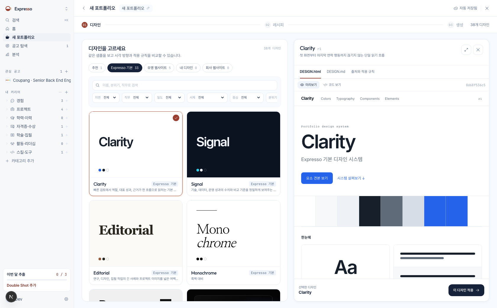

Expresso
2026 · TEAM SHARE
WEEKLY · 진행 상황
Brewed this week.
이번 주 개발 진행 현황 공유
8월 27일부터 9월 3일까지 main에 병합된 작업을 공유합니다.
TEAM
Expresso 개발팀
PERIOD
2026-08-27 — 2026-09-03
AUDIENCE
팀 전체
AGENDA02 / 14
오늘 이야기할 것
아홉 갈래로 나눠 하나씩 짚습니다.
01화면 결함 정비
02포트폴리오 디자인 카탈로그
03MongoDB 백엔드 전환
04공고 수집 어댑터 확장
05커리어 기록 편집기
06채용 적합도 추천 모델
07운영 배포 안정화
08P5 학과 연구 데이터 수집
09AI Hub 면접 라벨 · 합성 프로필 도구
02
NUMBERS03 / 14
MEASURED · 2026-09-03
이번 주를 숫자로
병합된 PR
11
main 브랜치 커밋
174
작업 기간
7일
다룬 갈래
9
main 브랜치 기준 · 2026-09-03 15시 30분 집계.
0301 · FIXED04 / 14
8월 27일
화면 결함 정비
다크 모드 정비
좁은 화면 · 다크 지면 색상 결함 정비
완료
에디터 UI 정비
브루 마법사 · 툴바 · 상태 바 넘침 정비
완료
배포 경로 통합
생성 · 편집 · 배포를 한 경로로 정리
완료
04
02 · SCREEN05 / 14
포트폴리오 디자인 카탈로그
expresso.app/brew/…/design

30
38
종 디자인
1
포스터형 미리보기 · 스타일별 프롬프트
2
DESIGN.html로 색상 · 타이포그래피 규칙 정리
3
디자인 시스템 v2 계약 · 문서 컴파일러
PR #11
05
03 · MIGRATION06 / 14
EXTRACT · TRANSFORM · LOAD
MongoDB 백엔드 전환
PR #7 · #8 · #9 · #10.
0604 · SOURCING07 / 14
FETCH · SELECT · LOAD
공고 수집 어댑터 확장
PR #12 · #13.
0705 · SCREEN08 / 14
커리어 기록 편집기
expresso.app/career/records/…

1
블록 문서 코어 · 공용 계약 신설
2
실시간 편집 세션 연결
3
테이블 그룹화 · 정렬 · 드래그 재정렬
4
AI 변경 제안과 되돌리기
PR #15 · #16
08
06 · IN PROGRESS09 / 14
FETCH · EVALUATE · GENERATE
채용 적합도 추천 모델
09
07 · DEPLOY10 / 14
9월 2일 — 9월 3일
운영 배포 안정화
패키지 빌드 순서
편집기 패키지의 빌드 순서가 어긋나 있던 것을 바로잡았습니다.
PR #17
워크스페이스 연결
끊겨 있던 운영 배포 워크스페이스 연결을 다시 만들었습니다.
PR #18
10
08 · RESEARCH11 / 14
P5
P5 학과 연구 데이터 수집
8월 27일
수집 계획 문서 작성
완료
9월 1일
데이터 수집 기반 구현
완료
무엇을 어떻게 모을지 계획하고, 그 계획에 맞춘 수집 기반을 코드로 만들었습니다.
1109 · RESEARCH12 / 14
9월 2일
AI Hub 면접 라벨 · 합성 프로필 조립 도구
9월 2일 새벽
AI Hub 면접 라벨 수집 결과 기록
완료
9월 2일 새벽
합성 프로필 조립 도구 추가
완료
이후 06 · 채용 적합도 추천 모델의 합성 프로필 파이프라인이 이를 이어받아 v3부터 발전시켰습니다.
12NOW13 / 14
지금도 이어지는 것
9월 3일 오후까지 계속 보정 중인 작업입니다.
채용 추천 모델 · 진행 중
합성 프로필 파이프라인
길이 구간과 사건 다양성 게이트를 오늘까지 반복 보정하고 있습니다.
최근 커밋 · 오늘 15:30
13
Expresso
14 / 14
감사합니다
Thank you.
궁금한 점은 이 자료를 만든 사람에게 물어보십시오.
자료
docs/이번주-진행상황-공유.html
저장소 docs/ 아래 · 오늘 갱신
다음 자리
다음 주간 공유
그 사이 진행은 docs/ 에서 갱신